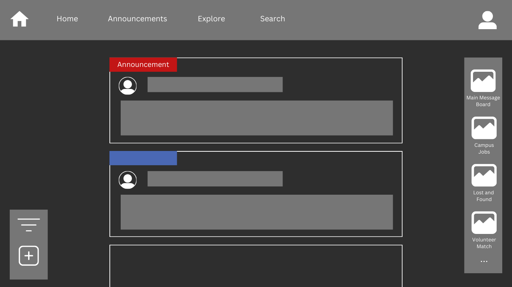
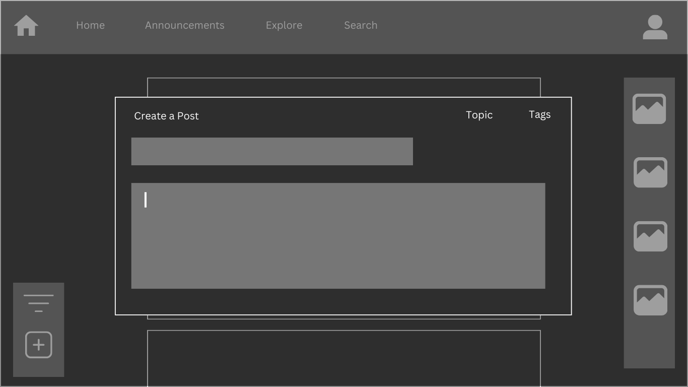
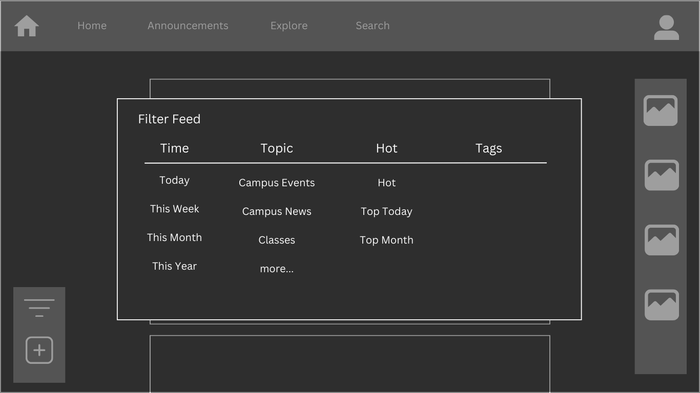
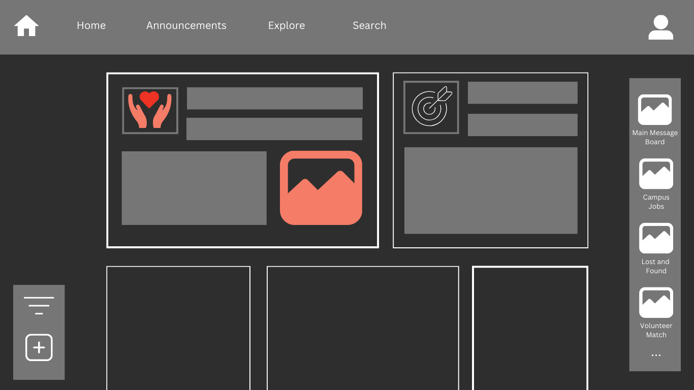

Overview
Our team has noticed that many of our peers have not been connecting as much with each other. We are disconnected and alone most of the time and our application is the solution to that. Our application plans on being the link between professors and students by creating a message board where both students and professors can chat about different topics. Overall, the purpose is to allow people on campus to interact with each other and get advice on different topics. There will also be an official announcement tab where important announcements will be posted so everyone can see them. In addition, we plan on having different groups which will allow groups of like-minded people to connect with each other. We believe that could be a great social environment for everyone on campus to learn more about what’s happening on campus and for people to interact with each other and meet new people. This will allow more events to be advertised, students to be more involved in different events on campus, and a stronger sense of community within our campus.
Application Parts
University Message Board:The message board is the base aspect of the application. It is a space where anyone in the university can post and interact with each other. Users can share thoughts, socialize, get advice for campus life, school work, and careers, discuss campus news, and anything else they would like.
Official Announcements: This will also be a platform where important announcements can be distributed and discussed in one place. This can include news or reminders about schedules and holidays, school closures, transportation, dorms, or any other university services. The design of the application allows these announcements to be centralized and also more interactive. Users can ask questions and clarifications about the posts and give their input and the university can quickly get feedback from the community through this interaction or through additional polls or surveys.
Other Community Groups: The application also allows for a wide range of more specific groups to be formed. It includes a place where new campus job openings can be posted and applicants can find and apply for them, a similar space for sharing volunteer opportunities, and a lost and found platform to make finding lost items on campus much easier and more collaborative with the community. And the university can create any other helpful group as the usage of the application develops.
Data Requirements
University Message Board:As the base element of the application, the storage of messages displayed on the message board will be critical in determining the success of the mission behind our application. Each message will have to have its text, user source, and associated tags saved in order to allow for user-to-user socialization, as well as filtration for user-specific relevant categories of information. Naturally, some light extent of user information will need to be stored for every user in order to allow for the creation of a virtual identity in our application.
Official Announcements: The official announcements are the second most critical portion of the application. Its data requirements are similar to the data requirements of the message board, however, they will have to be distinctly saved in order to not be confused with generic messages when working with them in the backend. This could mean creating separate tables for messages and announcements or combining the two and having each entry identified as either a message or announcement. Both implementations have their pros and cons.
Other Community Groups: The storage of different groups will be important for this portion of the application. There will be a protocol in the application to register a group and, once approved, the group would then be added to an official table of groups, the user administrators of which would have access to more diverse functionality within the application. The relations between groups and users will be an important data requirement.
Summary: On the most fundamental level, the data requirements for this application boil down to storage of user information, group information, and messages from either entity. There are nuances to the message types and there need to be logical relations implemented between the three different entities, especially as the diversity of functionality potentially expands. But, in our MVP, the data requirements can be summarized by those three things.
Wire Frames (click on images to enlarge)
The home page will have the user’s main feed which shows the posts most important and relevant to them. For example, the important university announcements will be prioritized, as well as posts from groups the user is active/interested in, replies in conversations they are part of, or generally popular and interesting posts of the day. This page also has options to filter the feed or write a new post and gives access to specific groups on the side that can be explored.
In this view, the user can write their own post, and choose which topic or group to publish it in or tags to include.
This view shows the filter feature where users can customize their own feed based on their interests or what they are looking for in that moment. A filter option like this is available in the main feed as well as every other message group in the application.
This is the explore page where users can browse the top groups on the platform, seeing a short description and a few recent posts for each.
Real-World Connection
There is a prevalent issue within education, that is the fragmentation of communication. In many universities, information dissemination is scattered across various platforms such as emails, physical bulletin boards, social media, and department-specific newsletters. This dispersion creates a situation where important announcements, job openings, and event information can easily be overlooked by the intended audience, leading to lower participation rates, uninformed students, and a disconnected campus community. We took influence from the University of Michigan’s application which focuses on centralizing campus news, events, and various other factors by creating a central application. By providing a central platform where staff can post announcements, job listings, and event details, you're ensuring that all students have equal access to crucial information. This not only enhances the sense of community and belonging among students but also ensures that opportunities for professional development, academic engagement, and social interaction are maximally leveraged. These forms of applications can help foster engagement, which will build a more efficient and inclusive student body. They’re various applications around the world that have been made to help with engagement. From dating apps such as Tinder, to UMichigan’s app, to even Facebook and Instagram. Creating centralized platforms provides the user base with better engagement and a sense of community. This app can provide utility to both staff and students as they are able to communicate campus-wide.
Integrative Experience
Most undergraduates’ classes are unrelated to each other which is what makes the Integrative experience so important. It allows us to connect everything we’ve learned in the past to create something different. This project satisfies the Integrative Experience requirements because this project would allow us to practice different aspects of web design that we’ve learned in the past integrated with what we are interested in. We have each taken numerous computer science classes and we think this project will accurately showcase what we’ve learned throughout our college experience. We feel like this project is a great opportunity to allow our peers and us to become more involved on campus, meet new people, and help out our community. We have different filters because we want this project to help out students with different aspects like our job filter or the club filter. We have all seen something similar like Yikyak, an app we discovered as freshmen, where we have seen our peers frequently using it which got us thinking about how this would be something students would be interested in. We also have all gone through periods in our college lives where we felt like we were missing out on events and we believe this app would allow students to become more involved on campus..